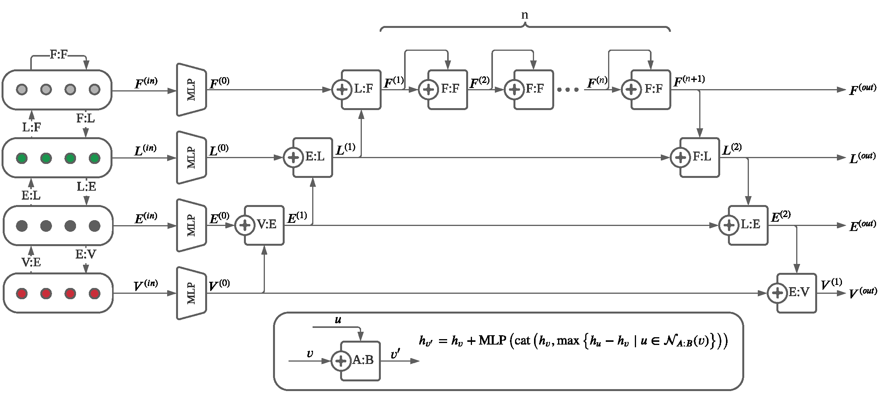
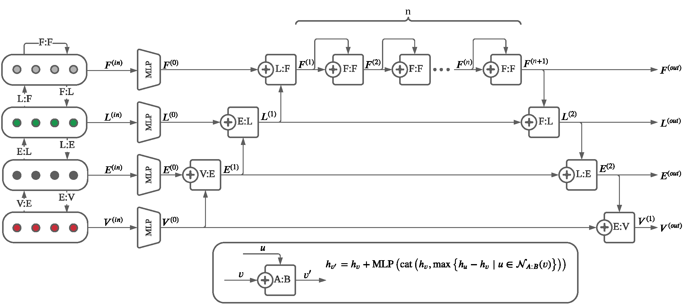
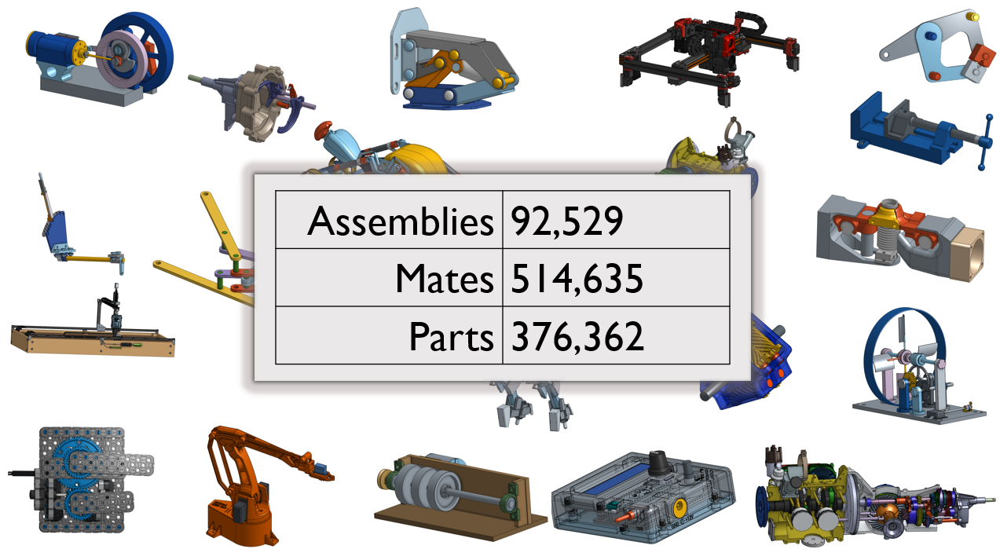
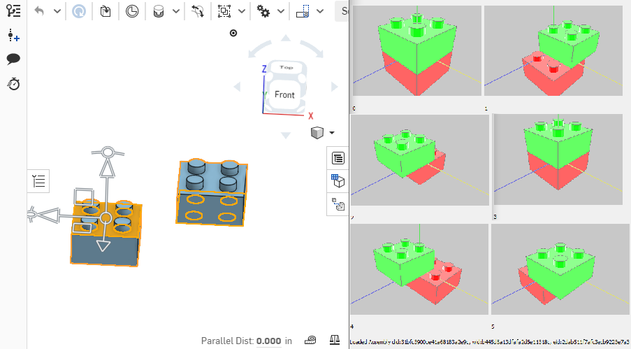
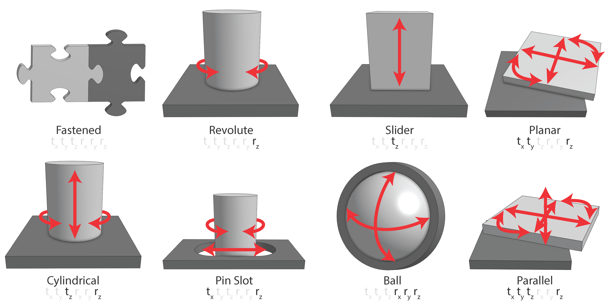

SB-GCN
The Structured B-rep GCN (SB-GCN) uses a hierarchal graph neural network to learn embeddings for all types of B-Rep topology while being memory efficient and enabling deep networks.
Assembly modeling is a core task of computer aided design (CAD), comprising around one third of the work in a CAD workflow. Optimizing this process therefore represents a huge opportunity in the design of a CAD system, but current research of assembly based modeling is not directly applicable to modern CAD systems because it eschews the dominant data structure of modern CAD: parametric boundary representations (BREPs). CAD assembly modeling defines assemblies as a system of pairwise constraints, called mates, between parts, which are defined relative to BREP topology rather than in world coordinates common to existing work. We propose SB-GCN, a representation learning scheme on BREPs that retains the topological structure of parts, and use these learned representations to predict CAD type mates. To train our system, we compiled the first large scale dataset of BREP CAD assemblies, which we are releasing along with benchmark mate prediction tasks. Finally, we demonstrate the compatibility of our model with an existing commercial CAD system by building a tool that assists users in mate creation by suggesting mate completions, with 72.2% accuracy.
The Structured B-rep GCN (SB-GCN) uses a hierarchal graph neural network to learn embeddings for all types of B-Rep topology while being memory efficient and enabling deep networks.
The AutoMate Dataset contains over half a million unique mates across nearly 100,000 unique assemblies for training automated assembly.
AutoMate auto-completes mates in a CAD assembly by suggestiing the most likely mates when parts are selected in a CAD system.
The AutoMate dataset classifies the functionality of each mate as one of 8 types of joint motion, and AutoMate predicts the most likely joint type for a given mate.
@article{jones2021automate,
title={Automate: A dataset and learning approach for automatic mating of cad assemblies},
author={Jones, Benjamin and Hildreth, Dalton and Chen, Duowen and Baran, Ilya and Kim, Vladimir G and Schulz, Adriana},
journal={ACM Transactions on Graphics (TOG)},
volume={40},
number={6},
pages={1--18},
year={2021},
publisher={ACM New York, NY, USA}
}